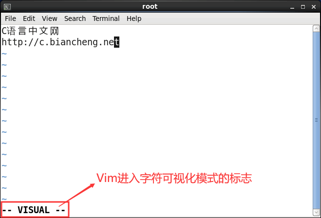
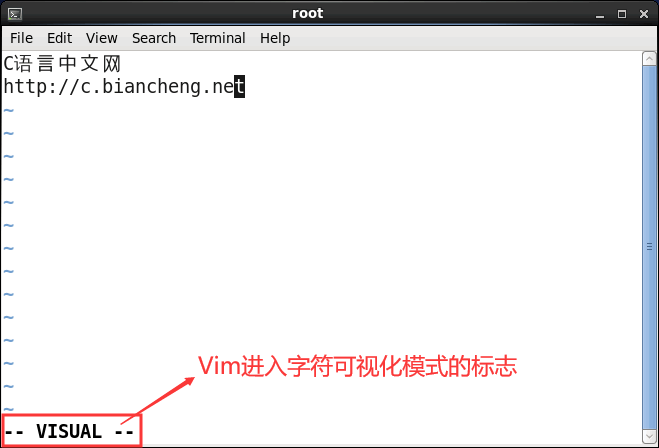

Linux Vim可视化模式及其用法
相信大家都使用过带图形界面的操作系统中的文字编辑器，用户可以使用鼠标来选择要操作的文本，非常方便。在 Vim 编辑器中也有类似的功能，但不是通过鼠标，而是通过键盘来选择要操作的文本。
在 Vim 中，如果想选中目标文本，就需要调整 Vim 进入可视化模式，如表 1 所示，通过在 Vim 命令模式下键入不同的键，可以进入不同的可视化模式。
以字符可视化模式为例，Vim 成功进入该模式的标志是窗口底部出现 --VISUAL-- 标志，如图 2 所示。

图 2 Vim成功进入字符可视化模式
另外值得一提的是，之前所学的在 Vim 命令模式下编辑文本的很多命令，在可视化模式下仍然可以使用。表 3 中罗列出了常用的几个可以在可视化模式下使用的命令。
在 Vim 中，如果想选中目标文本，就需要调整 Vim 进入可视化模式，如表 1 所示，通过在 Vim 命令模式下键入不同的键，可以进入不同的可视化模式。
| 命令 | 功能 |
|---|---|
| v（小写） | 又称字符可视化模式，此模式下目标文本的选择是以字符为单位的，也就是说，该模式下要一个字符一个字符的选中要操作的文本。 |
| V（大写） | 又称行可视化模式，此模式化目标文本的选择是以行为单位的，也就是说，该模式化可以一行一行的选中要操作的文本。 |
| Ctrl+v（组合键） | 又称块可视化模式，该模式下可以选中文本中的一个矩形区域作为目标文本，以按下 Ctrl+v 位置作为矩形的一角，光标移动的终点位置作为它的对角。 |
以字符可视化模式为例，Vim 成功进入该模式的标志是窗口底部出现 --VISUAL-- 标志，如图 2 所示。

图 2 Vim成功进入字符可视化模式
需要注意的是，当选中文本并做完相应操作（例如选中文件并按 p 键将其复制到剪贴板中）后，Vim 会自动从可视化模式转换为命令模式。当然，也可以再次按 v（或者 V、Ctrl+v）手动退出可视化模式。相应地，进入行可视化模式的标志是图 2 标记处显示 --VISUAL LINE--；进入块可视化模式的标志是图 2 标记处显示 --VISUAL BLOCK--。
另外值得一提的是，之前所学的在 Vim 命令模式下编辑文本的很多命令，在可视化模式下仍然可以使用。表 3 中罗列出了常用的几个可以在可视化模式下使用的命令。
| 命令 | 功能 |
|---|---|
| d | 删除选中的部分文本。 |
| D | 删除选中部分所在的行，和 d 不同之处在于，即使选中文本中有些字符所在的行没有都选中，删除时也会一并删除。 |
| y | 将选中部分复制到剪贴板中。 |
| p（小写） | 将剪贴板中的内容粘贴到光标之后。 |
| P（大写） | 将剪贴板中的内容粘贴到光标之前。 |
| u（小写） | 将选中部分中的大写字符全部改为小写字符。 |
| U（大写） | 将选中部分中的小写字符全部改为大写字符。 |
| > | 将选中部分右移（缩进）一个 tab 键规定的长度（CentOS 6.x 中，一个tab键默认相当于 8 个空白字符的长度）。 |
| < | 将选中部分左移一个 tab 键规定的长度（CentOS 6.x 中，一个tab键默认相当于 8 个空白字符的长度）。 |
关注公众号「站长严长生」，在手机上阅读所有教程，随时随地都能学习。内含一款搜索神器，免费下载全网书籍和视频。

微信扫码关注公众号